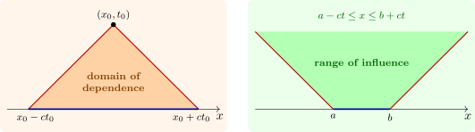

4.2 Causality: domains of dependence and influence
Formula (4.2) shows that \(u(x_0, t_0)\) depends only on the data in the interval \([x_0 - ct_0, x_0 + ct_0]\), the domain of dependence of the point, cut out by the two characteristics through it (Figure 6). Conversely, data in an interval \([a, b]\) influence only the wedge \(a - ct \leq x \leq b + ct\), the range of influence. This is finite speed of propagation: a signal cannot travel faster than \(c\).
There is a difference between the two kinds of data. Initial displacement \(f\) affects only the edges of the range of influence: a pulse in \(f\) passes a point and is gone. Initial velocity \(g\) enters through an integral, so its effect fills the whole wedge: a string struck by a hammer is left permanently displaced behind the waves (Problem 4.7.2). In one dimension, the sharp form of Huygens’ principle fails; whether it holds depends on the dimension, as the next section shows.

Questions on this section
Stuck on something here? Ask below and it stays attached to this topic.